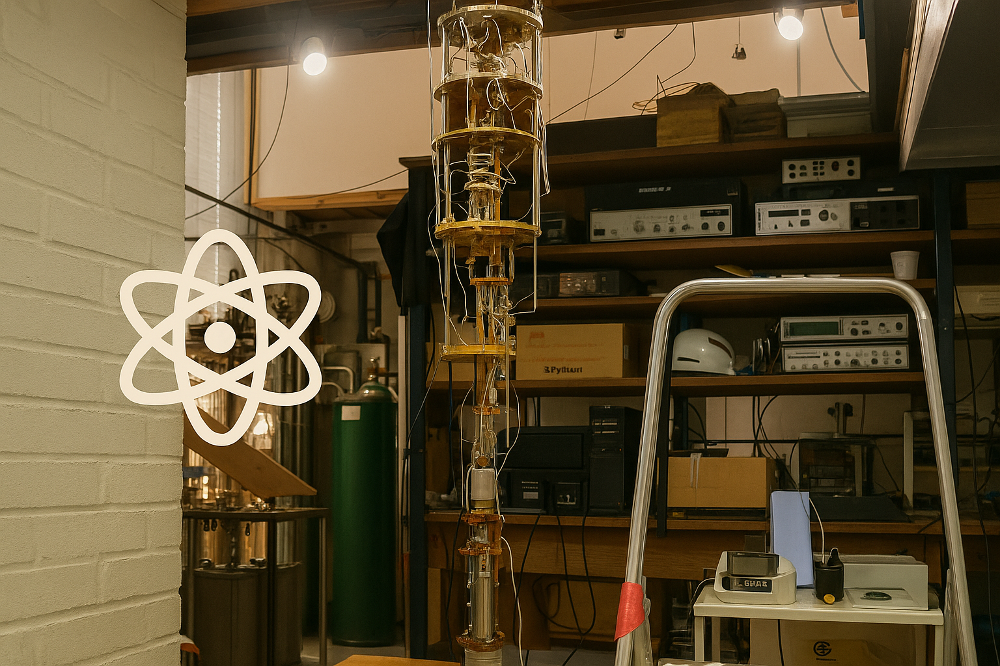
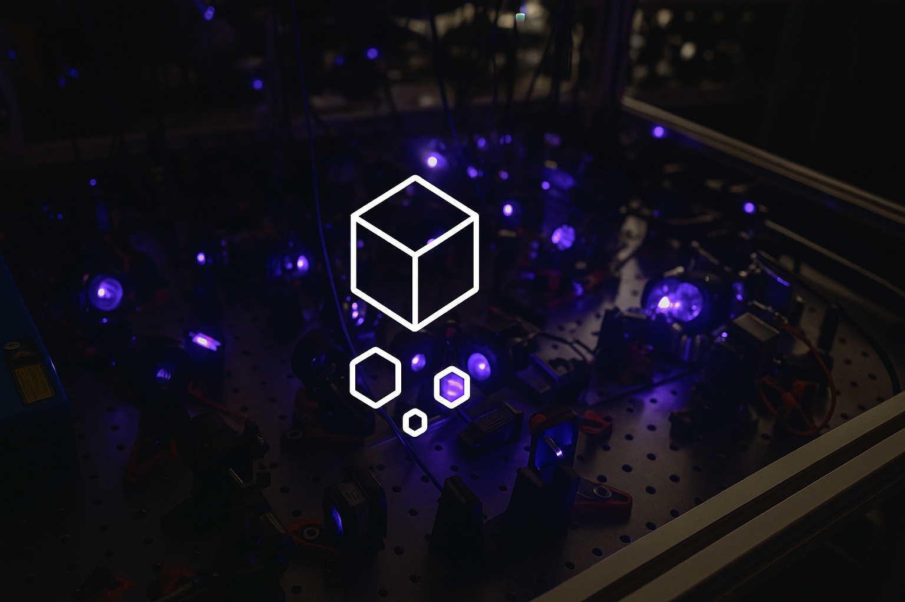
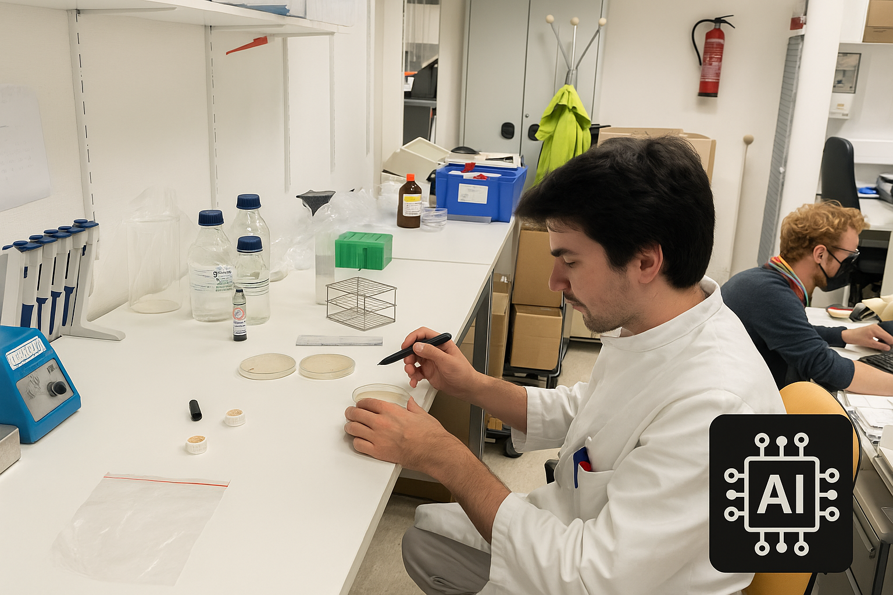

Projects
Beyond WIMP Dark Matter: From Theory to Detection
We investigate how dark matter could have been produced in the early universe and
what this means for its fundamental nature. Our research bridges cosmology and experiment,
developing new methods to reveal dark matter signatures both in controlled laboratory
systems and in the observation of celestial bodies.
Quantum Sensors for sub-GeV Dark Matter

Dark matter particles lighter than the proton remain one of the most elusive frontiers.
By advancing quantum sensing technologies and superfluid detectors, we aim to probe these
ultra-light candidates with unprecedented precision and sensitivity.
Generative AI for Next-Generation Crystals

We harness the power of generative AI to design novel molecular crystals that act as particle
detectors. These materials are envisioned to be inexpensive, scalable, and capable of
directional sensitivity, opening a new pathway toward dark matter discovery.
AI for Molecules and Medicine

Artificial intelligence is revolutionising how we discover and evaluate molecular properties.
Our work applies AI-driven searches to link molecular structure to biological activity, accelerating
innovation at the intersection of fundamental science and health applications.